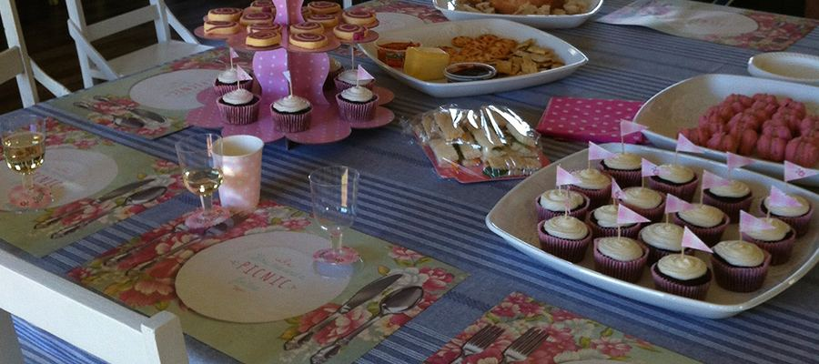

Film still: Slow Motion Croquet, not taken at Stephens
GalleryPictures from the lawn.
A collection of photos from around the club: the lawns, the clubhouse, and members enjoying croquet at Yeronga Park.





Have a good photo of the club? Send it to stephens@croquetqld.org.